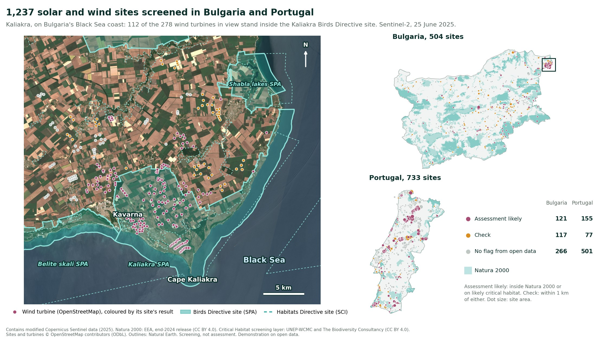
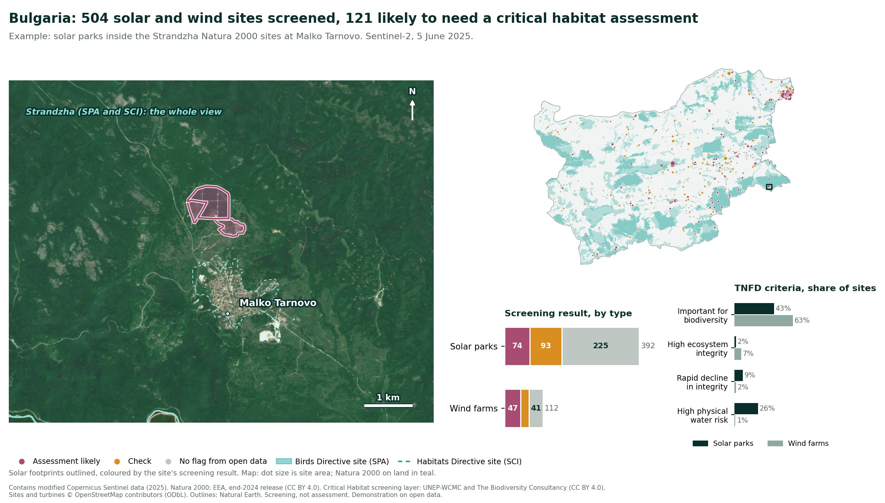
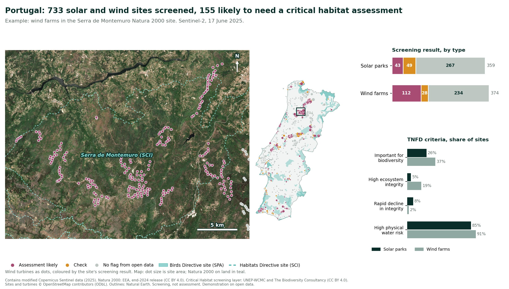
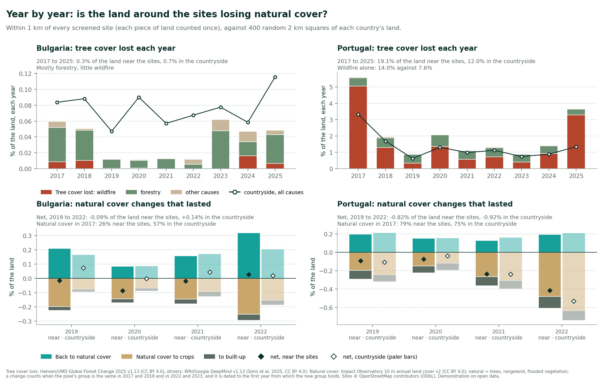
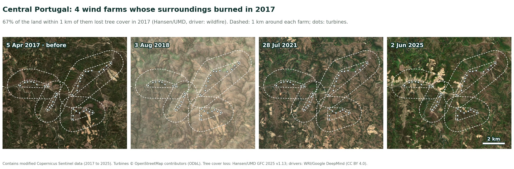
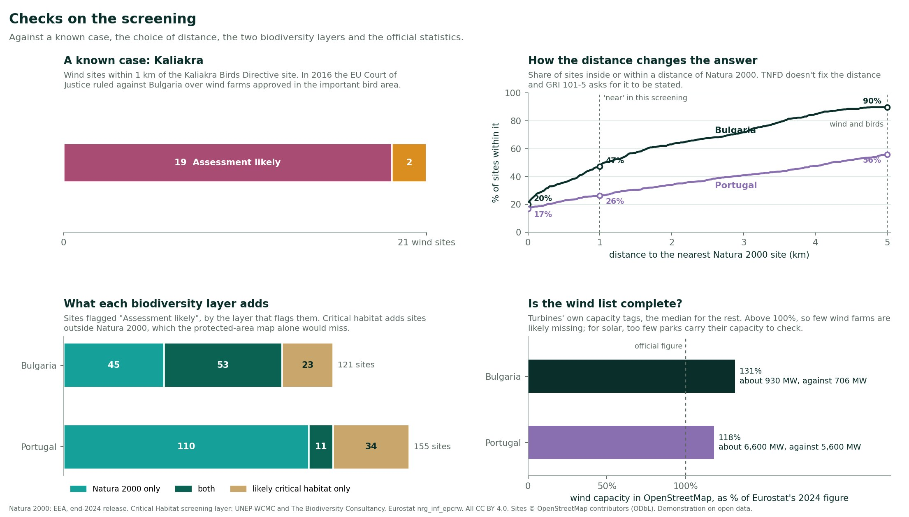
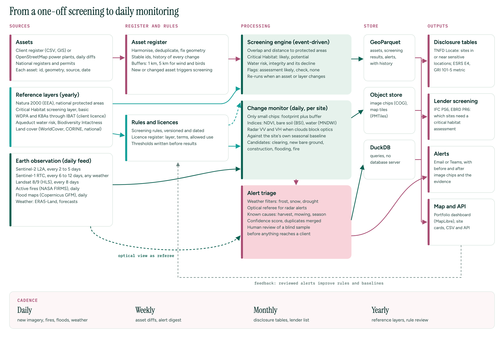
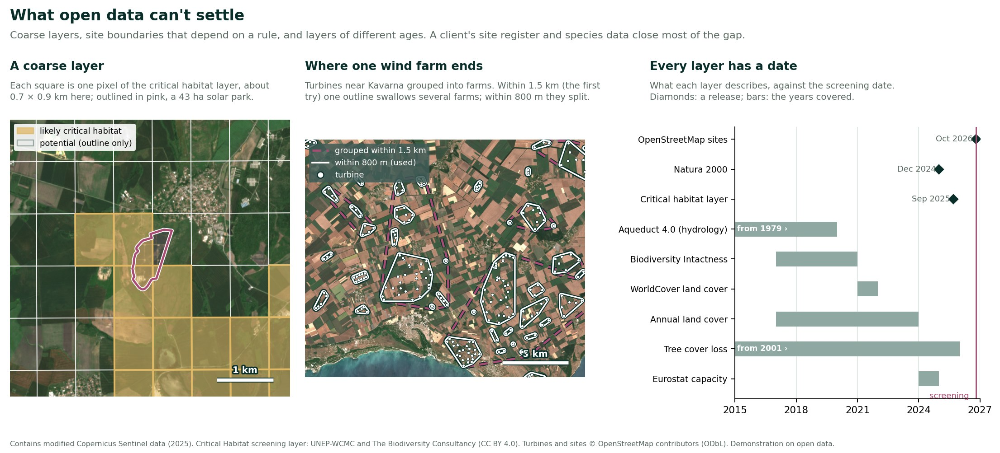
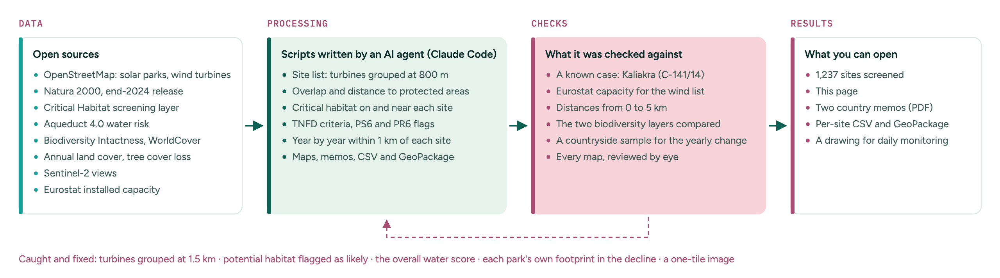

Demonstration on open data. Screening, not assessment, and not client work. A flag here means "look closer", never a finding about a site.
Take the solar parks and wind farms of 1 ha or more mapped in OpenStreetMap in Bulgaria and mainland Portugal: 1,237 sites. Which of them sit in or near a protected area or likely critical habitat, and which would a lender expect to go through a critical habitat assessment under IFC Performance Standard 6 or EBRD Performance Requirement 6?
The screening follows the Locate phase of the TNFD's LEAP approach. Its headline number is the one ESRS E4, GRI 101-5 and TNFD all ask for: sites in or near protected areas or areas of high biodiversity importance.

Kaliakra, on Bulgaria's Black Sea coast, and every screened site in both countries. Select the image to open it full size.
Lenders that follow IFC Performance Standard 6 or EBRD Performance Requirement 6 ask early on whether a project is in or near critical habitat or a legally protected area. Companies reporting under ESRS E4, GRI 101 or TNFD count their sites in or near sensitive locations. Both start with the same desk exercise: every site against the same layers, with the distances stated.
Bulgaria and Portugal are adding solar fast, and both have large Natura 2000 networks. Between 2022 and 2024, solar capacity grew from 1,737 to 4,560 MW in Bulgaria and from 2,646 to 5,639 MW in Portugal (Eurostat).
| Source | Used for | Licence |
|---|---|---|
| OpenStreetMap: solar and wind plants, wind turbines (data of 22 October 2026) | The sites | ODbL |
| Natura 2000, end-2024 release (European Environment Agency) | Birds Directive and Habitats Directive sites | CC BY 4.0 |
| Critical Habitat screening layer, basic version (UNEP-WCMC and The Biodiversity Consultancy, 2025) | Likely and potential critical habitat | CC BY 4.0 |
| Aqueduct 4.0 (World Resources Institute) | Physical water risk | CC BY 4.0 |
| Biodiversity Intactness Index, 2017 to 2020 (Impact Observatory and Vizzuality) | Ecosystem integrity and its decline | CC BY 4.0 |
| ESA WorldCover 2021 | Land cover on and around each site | CC BY 4.0 |
| Global Forest Change 2025 v1.13 (Hansen/UMD) | Tree cover lost each year, 2017 to 2025 | CC BY 4.0 |
| Drivers of tree cover loss v1.13 (WRI and Google DeepMind) | The main cause of each loss | CC BY 4.0 |
| 10 m annual land use land cover v2, 2017 to 2023 (Impact Observatory) | Natural cover, year by year | CC BY 4.0 |
| Sentinel-2, 2017 to 2025 | The views of Kaliakra, Malko Tarnovo, Serra de Montemuro and central Portugal | Copernicus free and open |
| Eurostat, electricity capacity from renewables (nrg_inf_epcrw) | Checking the site list | CC BY 4.0 |
| Natural Earth | Country outlines on the maps | Public domain |
Not used: WDPA and key biodiversity area data, whose terms don't allow commercial use or redistribution without permission, and the non-commercial "drill-down" version of the critical habitat layer.
The rules and distances were written down before the results and not tuned to them.
Bulgaria's 504 sites are mostly small solar parks (392, half of them under 4.4 ha), and its wind farms are concentrated in the north-east, around Kaliakra. Natura 2000 covers a large share of the country, so "near" is common: 47% of the sites are in or within 1 km of Natura 2000 or likely critical habitat. The example below: solar parks at Malko Tarnovo, inside both Strandzha Natura 2000 sites.

Bulgaria: an example, the sites and the results. Select the image to open it full size.
Portugal's 733 sites split between solar parks (359) and wind farms (374). Wind farms stand mostly on the hills and ridges of the north and centre, and 112 of the 155 sites flagged for assessment are wind farms. Solar parks are more spread out, and 85% of them are in catchments with high physical water risk. The example: wind farms in the Serra de Montemuro, a Habitats Directive site.

Portugal: an example, the sites and the results. Select the image to open it full size.
Is the land around the sites losing natural cover? Two yearly records answer it for the land within 1 km of every site, counted once where sites are close together, and for 400 random 2 km squares of each country as a comparison: tree cover lost each year from 2017 to 2025 with its main cause, and natural cover against crops and built-up land from 2017 to 2023.

Near the sites against the countryside, year by year. Select the image to open it full size.

Before, after and since: four wind farms in central Portugal whose surroundings burned in 2017. Select the image to open it full size.
A change near a site isn't necessarily caused by the site. These records show where the land is changing, which is what TNFD's "rapid decline in ecosystem integrity" asks about, and where a monitoring visit or a closer look would start.

The checks at a glance; the table below gives the numbers. Select the image to open it full size.
| Check | Result |
|---|---|
| A known case: Kaliakra | 19 of the 21 wind sites within 1 km of the Kaliakra Birds Directive site are flagged "Assessment likely", the other 2 "Check". In 2016 the EU Court of Justice found that Bulgaria had left part of the Kaliakra important bird area out of the protected site and had approved wind farms in it (case C-141/14). |
| How much the distance changes the answer | Sites inside or near Natura 2000. Bulgaria: 20% inside, 36% within 500 m, 47% within 1 km, 63% within 2 km, 90% within 5 km. Portugal: 17%, 23%, 26%, 34% and 56%. |
| What each biodiversity layer adds | Of the "Assessment likely" sites, critical habitat alone flags 23 in Bulgaria and 34 in Portugal that are outside Natura 2000. Natura 2000 alone flags 45 and 110. |
| Is the wind list complete? | Wind capacity from OpenStreetMap's turbines, from their own tags and the median size for the rest: about 930 MW in Bulgaria and 6,600 MW in Portugal, against 706 and 5,600 MW in Eurostat for 2024. The estimate is above the official figure, so few wind farms are likely missing. Most turbines carry no capacity tag, so it stays an estimate. |
| Is the solar list complete? | Less certain: few solar parks carry their capacity in OpenStreetMap. The list has 392 parks over 4,415 ha in Bulgaria and 359 over 5,232 ha in Portugal, against 4,560 and 5,639 MW of solar in Eurostat for 2024, rooftops included. |
Screening is not assessment. A flag says where to look closer. Whether a site is critical habitat is decided by the assessment, with species data and field survey.
Run once, a screening is a snapshot. Run as a service, it keeps up with the sites: a new or changed site triggers the screening, the reference layers are refreshed once a year, and satellite data watch each site and its surroundings every few days.

How the screening would run at scale, with daily monitoring. Select the image to open it full size.

A coarse layer, a boundary that depends on a rule, and layers of different ages. Select the image to open it full size.

An agent (Claude Code) wrote the scripts: the site list from OpenStreetMap, the downloads from each open service, the screening, the year-by-year record, the checks, the maps, the memos and the drawing. The rules were written down before the results, and the results were checked against a known case, the official statistics and the maps themselves.
What it got wrong, and what caught it: grouping turbines within 1.5 km joined the wind farms around Kavarna into one 6,000 ha site, so turbines 8 km from the bird area were flagged along with it. The map showed it, and the published 800 m replaced it. The first screening flagged almost every site in Bulgaria, because potential critical habitat covers most of the lowlands; it is now reported, not flagged. The first decline in integrity included each site's own footprint, so a park built between 2017 and 2020 showed its own construction as decline; now only the surroundings count. The first water criterion used Aqueduct's overall score, which also counts regulatory and reputational risk; TNFD asks about physical water risk, and with it 645 sites in Portugal qualify instead of 130. The first try at dating each park's construction from the annual land cover maps failed, because they read panels as rangeland or crops; the yearly step looks at the surroundings instead. And the first satellite view of Kaliakra covered only a strip at the bottom of the map, because the area spans four Sentinel-2 tiles.
Own outputs and open data only, with every source and licence named inside. The site list is derived from OpenStreetMap and shared under the ODbL.